Derivations
After the construction of a model comes the operation of derivation: geometrical reasoning about what has been constructed. A derivation works in a context — a model or a superposition — and consists of operations.
| operation | what it does |
|---|---|
given h: equal(<param>, <expr>) |
a hypothesis: it restricts the parameter space |
construct F = … |
an auxiliary construction, added to the context |
derive d: <proposition> from <premises> by <rule> |
a proposition derived from named premises by a named rule |
show A: <proposition> … qed from <steps> |
a sub-argument: the claim first, then the steps that establish it |
cases / case n: when <condition> / qed by cases |
a claim argued separately under conditions that together cover every configuration |
suppose n: <condition> |
restricts the steps that follow to the configurations in which the condition holds |
compute x = … |
a quantity under a parametrisation, compared with a reported value |
determine p, q from … |
parameters determined from observed intervals through the model |
conclude … |
the proposition the derivation is for |
The derivation that Fig. 1.2 exhibits
The page says: “To construct the epicyclic model, complete parallelogram OESC”. It names the figure in which the reasoning can be seen. The reasoning itself, step by step, with the proposition that licenses each step:
# The equivalence of the two forms when the radii are equal: the reasoning that Swerdlow's Fig. 1.2 exhibits.
# The page (p. 19, scan page 49, paragraph 3): "To construct the epicyclic model, complete parallelogram OESC and
# let C be the center of an epicycle of radius r = e moving uniformly through κ̄ on a concentric circle about O of
# radius R' = R while the sun S moves in the opposite direction through κ̄ about C from OC extended to the apogee
# of the epicycle, so that r is always parallel to the apsidal line AB."
# The page names the parallelogram. The steps, the propositions that license them, and the two positions in
# which there is no parallelogram — the sun at the apogee and at the perigee — are set out here.
derivation solar-equivalence-equal-radii in solar-eccentric-epicyclic "The two forms place the sun at the same point when R' = R and r = e"
witness fr:kepler-sec/Swerdlow2026/0049/p04 "the parallelogram OESC, p. 19"
witness fr:kepler-sec/Swerdlow2026/0050/fig01 "Fig. 1.2"
author "Gerd Graßhoff"
given h1: equal(Epi.R', Ecc.R) "the deferent has the radius of the eccentric"
given h2: equal(Epi.r, Ecc.e) "the epicycle has the eccentricity as its radius"
show same: coincident(Ecc.S, Epi.S') "the sun of the eccentric form and the sun of the epicyclic form are one point"
# what the two constructions give in every position
derive d3: equal(distance(Ecc.E, Ecc.S), Ecc.R) from def Ecc.S by construction "S lies on the eccentric"
derive d4: equal(distance(O, Epi.C), Epi.R') from def Epi.C by construction "C lies on the deferent"
derive d8: equal(distance(O, Ecc.E), Ecc.e) from def Ecc.E by construction "OE is the eccentricity"
derive d9: equal(distance(Epi.C, Epi.S'), Epi.r) from def Epi.S' by construction "S' lies on the epicycle"
cases "by the position of the sun: off the apsidal line, at the apogee, at the perigee"
case generic: when noncollinear(O, Ecc.E, Ecc.S) "off the apsidal line, OESC is a parallelogram"
show sides: parallel(line(Ecc.E, Ecc.S), line(O, Epi.C)) "ES and OC are parallel"
derive d1: equal(angle(Ecc.A, Ecc.E, Ecc.S), angle(Epi.A', O, Epi.C)) from def Ecc.A, def Ecc.S, def Epi.A', def Epi.C by construction "both angles are the mean anomaly κ̄, counted from the apsidal line"
derive d2: parallel(line(Ecc.E, Ecc.S), line(O, Epi.C)) from d1 by Elements I.28 "the apsidal line falls on ES and OC and makes equal angles with them on the same side"
qed from d2
derive d5: equal(distance(Ecc.E, Ecc.S), distance(O, Epi.C)) from d3, d4, h1 by common notion 1 "ES = R = R' = OC"
show joins: parallel(line(O, Ecc.E), line(Epi.C, Ecc.S)) "OE and CS are parallel: OESC is a parallelogram"
derive d6: parallel(line(O, Ecc.E), line(Epi.C, Ecc.S)) from sides, d5 by Elements I.33 "the lines joining the ends of the equal and parallel ES and OC"
qed from d6
derive d7: equal(distance(O, Ecc.E), distance(Epi.C, Ecc.S)) from sides, d5 by Elements I.33 "and they are equal"
derive d10: equal(distance(Epi.C, Ecc.S), distance(Epi.C, Epi.S')) from d7, d8, h2, d9 by common notion 1 "CS = OE = e = r = CS'"
derive d11: parallel(line(Epi.C, Epi.S'), line(O, Ecc.E)) from def Epi.S', def Ecc.E by construction "the radius of the epicycle keeps the direction of the apsidal line"
derive d12: coincident(Ecc.S, Epi.S') from joins, d11, d10 by lemma same ray "S and S' lie from C along the parallel to OE, the same way, at the same distance"
qed from d12
case apogee: when collinear(O, Ecc.E, Ecc.S), between(Ecc.E, O, Ecc.S) "at the apogee the four points lie on the apsidal line, E between O and S"
derive a1: equal(distance(O, Ecc.S), distance(O, Ecc.E) + distance(Ecc.E, Ecc.S)) by lemma segment addition "OS = OE + ES"
derive a2: equal(distance(O, Epi.S'), distance(O, Epi.C) + distance(Epi.C, Epi.S')) by lemma segment addition "OS' = OC + CS'"
derive a3: equal(distance(O, Ecc.S), distance(O, Epi.S')) from a1, a2, d3, d4, d8, d9, h1, h2 by algebra "e + R = R' + r"
derive a4: parallel(line(O, Ecc.S), line(O, Ecc.E)) from apogee by lemma one line "S lies on the apsidal line"
derive a5: collinear(O, Ecc.E, Epi.S') from def Epi.C, def Epi.S', def Ecc.E by construction "and so does S'"
derive a6: parallel(line(O, Epi.S'), line(O, Ecc.E)) from a5 by lemma one line
derive a7: coincident(Ecc.S, Epi.S') from a4, a6, a3 by lemma same ray "S and S' lie from O along the apsidal line, the same way, at the same distance"
qed from a7
case perigee: when collinear(O, Ecc.E, Ecc.S), between(O, Ecc.E, Ecc.S) "at the perigee the four points lie on the apsidal line, O between E and S"
derive p1: equal(distance(Ecc.E, Ecc.S), distance(Ecc.E, O) + distance(O, Ecc.S)) by lemma segment addition "ES = EO + OS"
derive p2: equal(distance(Epi.C, O), distance(Epi.C, Epi.S') + distance(Epi.S', O)) by lemma segment addition "CO = CS' + S'O"
derive p3: equal(distance(O, Ecc.S), distance(O, Epi.S')) from p1, p2, d3, d4, d8, d9, h1, h2 by algebra "R − e = R' − r"
derive p4: parallel(line(O, Ecc.S), line(O, Ecc.E)) from perigee by lemma one line "S lies on the apsidal line"
derive p5: collinear(O, Ecc.E, Epi.S') from def Epi.C, def Epi.S', def Ecc.E by construction "and so does S'"
derive p6: parallel(line(O, Epi.S'), line(O, Ecc.E)) from p5 by lemma one line
derive p7: coincident(Ecc.S, Epi.S') from p4, p6, p3 by lemma same ray "S and S' lie from O along the apsidal line, the same way, at the same distance"
qed from p7
qed by cases
conclude equivalent(Ecc, Epi, position) from same "in every state the two forms have the sun at one point"The two forms place the sun at the same point when R’ = R and r = e
fr:astra/solar-equivalence-equal-radii · derivation · astra/1
| witness | fr:kepler-sec/Swerdlow2026/0049/p04 — the parallelogram OESC, p. 19 |
| witness | fr:kepler-sec/Swerdlow2026/0050/fig01 — Fig. 1.2 |
| this description by | Gerd Graßhoff |
| in | fr:astra/solar-eccentric-epicyclic |
| check | conclusive (5/5: ✓ well-formed · ✓ grounded · ✓ true · ✓ justified · ✓ conclusive) |
Given
- h1
equal(Epi.R', Ecc.R)— the deferent has the radius of the eccentric - h2
equal(Epi.r, Ecc.e)— the epicycle has the eccentricity as its radius
Steps
| proposition | from | by | status | |
|---|---|---|---|---|
| same | coincident(Ecc.S, Epi.S') |
— | cases | justified by cases |
| · d3 | equal(distance(Ecc.E, Ecc.S), Ecc.R) |
def Ecc.S | construction | read off the construction |
| · d4 | equal(distance(O, Epi.C), Epi.R') |
def Epi.C | construction | read off the construction |
| · d8 | equal(distance(O, Ecc.E), Ecc.e) |
def Ecc.E | construction | read off the construction |
| · d9 | equal(distance(Epi.C, Epi.S'), Epi.r) |
def Epi.S’ | construction | read off the construction |
| · generic | coincident(Ecc.S, Epi.S') |
d12 | — | justified |
| · · sides | parallel(line(Ecc.E, Ecc.S), line(O, Epi.C)) |
d2 | — | justified |
| · · · d1 | equal(angle(Ecc.A, Ecc.E, Ecc.S), angle(Epi.A', O, Epi.C)) |
def Ecc.A, def Ecc.S, def Epi.A’, def Epi.C | construction | read off the construction |
| · · · d2 | parallel(line(Ecc.E, Ecc.S), line(O, Epi.C)) |
d1 | Elements I.28 | justified |
| · · d5 | equal(distance(Ecc.E, Ecc.S), distance(O, Epi.C)) |
d3, d4, h1 | common notion 1 | justified |
| · · joins | parallel(line(O, Ecc.E), line(Epi.C, Ecc.S)) |
d6 | — | justified |
| · · · d6 | parallel(line(O, Ecc.E), line(Epi.C, Ecc.S)) |
sides, d5 | Elements I.33 | justified |
| · · d7 | equal(distance(O, Ecc.E), distance(Epi.C, Ecc.S)) |
sides, d5 | Elements I.33 | justified |
| · · d10 | equal(distance(Epi.C, Ecc.S), distance(Epi.C, Epi.S')) |
d7, d8, h2, d9 | common notion 1 | justified |
| · · d11 | parallel(line(Epi.C, Epi.S'), line(O, Ecc.E)) |
def Epi.S’, def Ecc.E | construction | read off the construction |
| · · d12 | coincident(Ecc.S, Epi.S') |
joins, d11, d10 | lemma same ray | justified |
| · apogee | coincident(Ecc.S, Epi.S') |
a7 | — | justified |
| · · a1 | equal(distance(O, Ecc.S), distance(O, Ecc.E) + distance(Ecc.E, Ecc.S)) |
— | lemma segment addition | justified |
| · · a2 | equal(distance(O, Epi.S'), distance(O, Epi.C) + distance(Epi.C, Epi.S')) |
— | lemma segment addition | justified |
| · · a3 | equal(distance(O, Ecc.S), distance(O, Epi.S')) |
a1, a2, d3, d4, d8, d9, h1, h2 | algebra | by calculation |
| · · a4 | parallel(line(O, Ecc.S), line(O, Ecc.E)) |
apogee | lemma one line | justified |
| · · a5 | collinear(O, Ecc.E, Epi.S') |
def Epi.C, def Epi.S’, def Ecc.E | construction | read off the construction |
| · · a6 | parallel(line(O, Epi.S'), line(O, Ecc.E)) |
a5 | lemma one line | justified |
| · · a7 | coincident(Ecc.S, Epi.S') |
a4, a6, a3 | lemma same ray | justified |
| · perigee | coincident(Ecc.S, Epi.S') |
p7 | — | justified |
| · · p1 | equal(distance(Ecc.E, Ecc.S), distance(Ecc.E, O) + distance(O, Ecc.S)) |
— | lemma segment addition | justified |
| · · p2 | equal(distance(Epi.C, O), distance(Epi.C, Epi.S') + distance(Epi.S', O)) |
— | lemma segment addition | justified |
| · · p3 | equal(distance(O, Ecc.S), distance(O, Epi.S')) |
p1, p2, d3, d4, d8, d9, h1, h2 | algebra | by calculation |
| · · p4 | parallel(line(O, Ecc.S), line(O, Ecc.E)) |
perigee | lemma one line | justified |
| · · p5 | collinear(O, Ecc.E, Epi.S') |
def Epi.C, def Epi.S’, def Ecc.E | construction | read off the construction |
| · · p6 | parallel(line(O, Epi.S'), line(O, Ecc.E)) |
p5 | lemma one line | justified |
| · · p7 | coincident(Ecc.S, Epi.S') |
p4, p6, p3 | lemma same ray | justified |
| conclusion | coincident(Ecc.S, Epi.S') |
same | — | justified |
Equivalence: solar-eccentric and solar-epicyclic are equivalent in position under equal(Epi.R', Ecc.R), equal(Epi.r, Ecc.e).
Rules used
- cases: “The claim is reached in every case, and the cases cover every configuration.”
- construction: “The proposition is read off the cited constructions: it holds for every parameter value and every state without any hypothesis.”
- Elements I.28: “If a straight line falling on two straight lines make the exterior angle equal to the interior and opposite angle on the same side, or the interior angles on the same side equal to two right angles, the straight lines will be parallel to one another.” (vol. I, p. 309,
fr:assyrischeSammlung/The-thirteen-books-of-Euclids-Elements--Vol-1-Books-1-2-by-Euclid--Sir-Thomas-Little-Heath/0318) - common notion 1: “Things which are equal to the same thing are also equal to one another.” (vol. I, p. 155,
fr:assyrischeSammlung/The-thirteen-books-of-Euclids-Elements--Vol-1-Books-1-2-by-Euclid--Sir-Thomas-Little-Heath/0164) - Elements I.33: “The straight lines joining equal and parallel straight lines (at the extremities which are) in the same directions (respectively) are themselves also equal and parallel.” (vol. I, p. 322,
fr:assyrischeSammlung/The-thirteen-books-of-Euclids-Elements--Vol-1-Books-1-2-by-Euclid--Sir-Thomas-Little-Heath/0331) - lemma same ray: “Two points that lie from a point C in the same direction along parallels to one line, at equal distances from C, coincide.”
- lemma segment addition: “If B lies between A and C on one line, AC is AB and BC together.”
- algebra: “The proposition follows from the cited equalities by calculation.”
- lemma one line: “Three points on one line give lines from one of them to the other two that are parallel (they are one line).”
Four questions
Grounded. Every premise resolves: to a given, an earlier step, the construction of an object (def Ecc.S), or a proposition stated in the model (prop p1).
True. Every proposition holds in all sampled configurations that satisfy the givens.
Justified. Every step is licensed by its rule, in one of four grades.
- An instance of a rule. For
d6 … by Elements I.33the matcher binds the proposition’s variables, A = O, B = C, C = E, D = S, so that I.33’s conclusion is the step’s proposition, finds its two hypotheses among the cited premises (d2 and d5), and evaluates its configuration conditions. - Common Notion 1. The two sides of an equality are joined by the cited equalities.
- Read off the construction. The proposition speaks only of the cited objects and what they are built from, and holds over the whole parameter space without the givens. ES = R is read off the construction of S.
- Calculation. An equality from cited equalities, confirmed numerically; the calculation is not replayed.
Conclusive. For every given, the parameter space is sampled with that given lifted. A proposition that then fails needs the given. If the given is not cited on the way to it, it is a tacit premise.
What the figure supplies: configuration conditions and degenerate states
Euclid’s propositions take something from the figure: that points are distinct, that two points lie on the same side of a line, that two segments point the same way. In the rule table these are configuration conditions, and they are evaluated in every sampled configuration. I.33 needs A, B, C not to lie on one line. At κ̄ = 0° and κ̄ = 180° the parallelogram OESC collapses into the apsidal line, and I.33 does not apply. These are the degenerate states of the step. The conclusion is true there as well, but the parallelogram does not reach it, and the printed figure, drawn at κ̄ ≈ 41°, does not show that.
Sub-arguments and cases
The derivation above therefore argues its claim — the two suns are one point — in three cases: off the apsidal line by the parallelogram; at the apogee and at the perigee by adding and subtracting lengths along the line. A case has a condition (when noncollinear(O, Ecc.E, Ecc.S)); its steps are checked only in the configurations that satisfy it; qed by cases requires that the cases together cover every configuration and that each reaches the claim. A sub-argument (show … qed) states a claim and then the steps for it; its inside cannot be cited from outside, which is what makes an overview possible. A supposition (suppose quadrant: right_angle(D, C, E)) restricts the steps after it to one position, as Kepler’s “et sit jam DCE rectus” does. Read as an argument with collapse and expand: Arguments.
What the checks say when something is wrong
# the wrong proposition is cited
✗ d6: parallel(line(O, Ecc.E), line(Epi.C, Ecc.S)) by Elements I.29
— true, not justified (the proposition is not a conclusion of the rule)
# a hypothesis of the proposition is not cited
✗ d6: parallel(line(O, Ecc.E), line(Epi.C, Ecc.S)) by Elements I.33
— true, not justified (a hypothesis of the rule is not among the cited premises)
# a false proposition
✗ d12: coincident(Ecc.S, Epi.C) by lemma same ray
— false (residual 0.462 of the scale at kappa_bar = 10° for Ecc.R = 224.2, Ecc.e = 103.5, lamA = 80.62, T = 372.7, kappa_0 = 33.21, Epi.R' = 224.2, Epi.r = 103.5)
# a hypothesis is used without being cited
✗ conclusive: d10 holds only under h2, which is not cited on the way to it (a tacit premise)
✗ conclusive: d12 holds only under h2, which is not cited on the way to it (a tacit premise)
# a case is left out: the perigee
✗ justified: same: coincident(Ecc.S, Epi.S') by cases: no case covers kappa_bar = 180°The proportional case
The two forms show the sun in the same direction when R’/r = R/e
fr:astra/solar-equivalence-proportional · derivation · astra/1
| witness | fr:kepler-sec/Swerdlow2026/0050/p02 — the proportional case, p. 20 |
| witness | fr:kepler-sec/Swerdlow2026/0051/fig01 — Fig. 1.3 |
| this description by | Gerd Graßhoff |
| in | fr:astra/solar-eccentric-epicyclic |
| check | conclusive (5/5: ✓ well-formed · ✓ grounded · ✓ true · ✓ justified · ✓ conclusive) |
Given
- h1
equal(Epi.r, Epi.R' * Ecc.e / Ecc.R)— R’/r = R/e
Steps
| proposition | from | by | status | |
|---|---|---|---|---|
| d1 | equal(angle(O, Ecc.E, Ecc.S), angle(Epi.S', Epi.C, O)) |
def Ecc.E, def Ecc.S, def Epi.C, def Epi.S’ | construction | read off the construction |
| d2 | equal(distance(O, Ecc.E), Ecc.e) |
def Ecc.E | construction | read off the construction |
| d3 | equal(distance(Ecc.E, Ecc.S), Ecc.R) |
def Ecc.S | construction | read off the construction |
| d4 | equal(distance(Epi.C, Epi.S'), Epi.r) |
def Epi.S’ | construction | read off the construction |
| d5 | equal(distance(O, Epi.C), Epi.R') |
def Epi.C | construction | read off the construction |
| d6 | equal(distance(Ecc.E, O) / distance(Ecc.E, Ecc.S), distance(Epi.C, Epi.S') / distance(Epi.C, O)) |
d2, d3, d4, d5, h1 | algebra | by calculation |
| d7 | equal(angle(Ecc.E, O, Ecc.S), angle(Epi.C, Epi.S', O)) |
d1, d6 | Elements VI.6 | justified; degenerate at kappa_bar = 0°, kappa_bar = 180° |
| d8 | parallel(line(Epi.C, Epi.S'), line(O, Ecc.E)) |
def Epi.S’, def Ecc.E | construction | read off the construction |
| d9 | equal(angle(Epi.C, Epi.S', O), angle(Epi.S', O, Ecc.E)) |
d8 | Elements I.29 | justified; degenerate at kappa_bar = 0°, kappa_bar = 180° |
| d10 | equal(angle(Ecc.E, O, Ecc.S), angle(Ecc.E, O, Epi.S')) |
d7, d9 | common notion 1 | justified |
| d11 | equal(direction(O, Ecc.S), direction(O, Epi.S')) |
d10 | lemma same angle | justified; degenerate at kappa_bar = 0°, kappa_bar = 180° |
| conclusion | equal(direction(O, Ecc.S), direction(O, Epi.S')) |
d11 | — | justified |
Equivalence: solar-eccentric and solar-epicyclic are equivalent in direction under equal(Epi.r, Epi.R' * Ecc.e / Ecc.R).
Rules used
- construction: “The proposition is read off the cited constructions: it holds for every parameter value and every state without any hypothesis.”
- algebra: “The proposition follows from the cited equalities by calculation.”
- Elements VI.6: “If two triangles have one angle equal to one angle and the sides about the equal angles proportional, the triangles will be equiangular and will have those angles equal which the corresponding sides subtend.” (vol. II, p. 204,
fr:assyrischeSammlung/The-Thirteen-Books-of-the-Elements--Vol.-2-Books-3-9-by-Thomas-L.-Heath--Euclid/0211) - Elements I.29: “A straight line falling on parallel straight lines makes the alternate angles equal to one another, the exterior angle equal to the interior and opposite angle, and the interior angles on the same side equal to two right angles.” (vol. I, p. 311,
fr:assyrischeSammlung/The-thirteen-books-of-Euclids-Elements--Vol-1-Books-1-2-by-Euclid--Sir-Thomas-Little-Heath/0320) - common notion 1: “Things which are equal to the same thing are also equal to one another.” (vol. I, p. 155,
fr:assyrischeSammlung/The-thirteen-books-of-Euclids-Elements--Vol-1-Books-1-2-by-Euclid--Sir-Thomas-Little-Heath/0164) - lemma same angle: “Two points that subtend equal angles with a ray VP at V and lie on the same side of it are seen from V in the same direction.”
Notes and gaps
- degenerate states, in which a step’s rule does not apply, a term is undefined or an inequality becomes an equality: kappa_bar = 0°; kappa_bar = 180°. The derivation does not cover them; the conclusion is true there as well (numerically)
A derivation in one model, with an auxiliary construction
The page prints tan c = e sin κ̄ / (R + e cos κ̄) and its sine form without a derivation. The one below is supplied by the author of the astra text and says so: the perpendicular from the earth on ES, two right triangles, the exterior angle of the triangle OES.

The equation of centre is the angle at the sun, with tan c = e sin κ̄ / (R + e cos κ̄)
fr:astra/solar-equation-of-centre · derivation · astra/1
| witness | fr:kepler-sec/Swerdlow2026/0052/p03 — the formula, p. 22 |
| witness | fr:kepler-sec/Swerdlow2026/0052/p05 — the maximum, p. 22 |
| this description by | Gerd Graßhoff |
| in | fr:astra/solar-eccentric |
| check | conclusive (5/5: ✓ well-formed · ✓ grounded · ✓ true · ✓ justified · ✓ conclusive) |
Constructed
F = foot(O, line(E, S))— foot of the perpendicular from the earth on ES
Steps
| proposition | from | by | status | |
|---|---|---|---|---|
| d1 | equal(angle(S, E, A), angle(E, S, O) + angle(S, O, E)) |
def A | Elements I.32 | justified; degenerate at kappa_bar = 0°, kappa_bar = 180° |
| d2 | equal(abs(norm180(c)), angle(O, S, E)) |
d1, prop p1, prop p2 | algebra | by calculation |
| d3 | perpendicular(line(O, F), line(E, S)) |
def F | construction | read off the construction; undefined at kappa_bar = 0°, kappa_bar = 180° |
| d4 | equal(distance(O, F), distance(O, E) * sin(angle(O, E, F))) |
d3 | trigonometry sine | justified; degenerate at kappa_bar = 0°, kappa_bar = 90°, kappa_bar = 180°, kappa_bar = 270°; undefined at kappa_bar = 270°, kappa_bar = 90° |
| d5 | equal(distance(O, E), e) |
def E | construction | read off the construction |
| d6 | equal(sin(angle(O, E, F)), abs(sin(kappa_bar))) |
def E, def S, def F | construction | read off the construction; undefined at kappa_bar = 270°, kappa_bar = 90° |
| d7 | equal(distance(O, F), e * abs(sin(kappa_bar))) |
d4, d5, d6 | algebra | by calculation |
| d8 | equal(distance(S, F), R + e * cos(kappa_bar)) |
def E, def S, def F | construction | read off the construction |
| d9 | equal(tan(angle(O, S, F)), distance(O, F) / distance(S, F)) |
d3 | trigonometry tangent | justified; degenerate at kappa_bar = 0°, kappa_bar = 180° |
| d10 | equal(angle(O, S, F), angle(O, S, E)) |
def F, def E, def S | construction | read off the construction |
| d11 | equal(distance(O, F), distance(O, S) * sin(angle(O, S, F))) |
d3 | trigonometry sine | justified; degenerate at kappa_bar = 0°, kappa_bar = 180° |
| d12 | equal(distance(O, S) * distance(O, S), distance(O, F) * distance(O, F) + distance(S, F) * distance(S, F)) |
d3 | Elements I.47 | justified; degenerate at kappa_bar = 0°, kappa_bar = 180° |
| conclusion2 | equal(sin(abs(norm180(c))), e * abs(sin(kappa_bar)) / sqrt(R * R + e * e + 2 * R * e * cos(kappa_bar))) |
d2, d10, d11, d12, d7, d8 | algebra | by calculation |
| conclusion | equal(tan(abs(norm180(c))), e * abs(sin(kappa_bar)) / (R + e * cos(kappa_bar))) |
d2, d9, d10, d7, d8 | algebra | by calculation |
Rules used
- Elements I.32: “In any triangle, if one of the sides be produced, the exterior angle is equal to the two interior and opposite angles, and the three interior angles of the triangle are equal to two right angles.” (vol. I, p. 316,
fr:assyrischeSammlung/The-thirteen-books-of-Euclids-Elements--Vol-1-Books-1-2-by-Euclid--Sir-Thomas-Little-Heath/0325) - algebra: “The proposition follows from the cited equalities by calculation.”
- construction: “The proposition is read off the cited constructions: it holds for every parameter value and every state without any hypothesis.”
- trigonometry sine: “In a right triangle the side opposite an acute angle is the hypotenuse times the sine of that angle.”
- trigonometry tangent: “In a right triangle the tangent of an acute angle is the opposite side over the adjacent side.”
- Elements I.47: “In right-angled triangles the square on the side subtending the right angle is equal to the squares on the sides containing the right angle.” (vol. I, p. 349,
fr:assyrischeSammlung/The-thirteen-books-of-Euclids-Elements--Vol-1-Books-1-2-by-Euclid--Sir-Thomas-Little-Heath/0358)
Computed
| quantity | with | computed | reported | verdict |
|---|---|---|---|---|
| c_max: max angle(O, S, E) | fr:astra/solar-eccentric.ptolemy |
2;23° (κ̄ = 267;37°) | 2;23° | confirmed |
| c_max_battani: max angle(O, S, E) | fr:astra/solar-eccentric.battani |
1;59,9° (κ̄ = 268;1°) | 1;59,10° | discrepancy, −0;0,0,55 |
Notes and gaps
- d2 rests on the stated proposition p1 (equal(lam_bar, lamA + kappa_bar)), which is checked numerically, not derived
- d2 rests on the stated proposition p2 (equal(kappa, kappa_bar - c)), which is checked numerically, not derived
- degenerate states, in which a step’s rule does not apply, a term is undefined or an inequality becomes an equality: kappa_bar = 0°; kappa_bar = 180°; kappa_bar = 270°; kappa_bar = 90°. The derivation does not cover them; the conclusion is true there as well (numerically)
- c_max_battani: computed 1;59,9°, reported 1;59,10° (difference −0;0,0,55)
Parameters determined from observations
The page reports Ptolemy’s season lengths and the parameters he found from them. determine inverts the model numerically for the two unknowns, once from the day counts and once from the arcs of mean motion the page reports, and compares both with the reported parameters.
The eccentricity and the apogee follow from the lengths of spring and summer
fr:astra/solar-parameters-from-seasons · derivation · astra/1
| witness | fr:kepler-sec/Swerdlow2026/0052/p05 — the seasons and the parameters, p. 22 |
| this description by | Gerd Graßhoff |
| in | fr:astra/solar-eccentric |
| check | conclusive (5/5: ✓ well-formed · ✓ grounded · ✓ true · ✓ justified · ✓ conclusive) |
Steps
| proposition | from | by | status | |
|---|---|---|---|---|
| d1 | equal(lam_bar, lamA + kappa_bar) |
def lam_bar, def S | construction | read off the construction |
| conclusion | equal(lam_bar, lamA + kappa_bar) |
d1 | — | justified |
Rules used
- construction: “The proposition is read off the cited constructions: it holds for every parameter value and every state without any hypothesis.”
Computed
| quantity | with | computed | reported | verdict |
|---|---|---|---|---|
| days.e: e determined from lam: 0° → 90° in 94;30 d, lam: 90° → 180° in 92;30 d | fr:astra/solar-eccentric.ptolemy |
2;28,58 (the only solution found; days turned into arcs of mean motion with T = 365;14,48 d) | 2;29,30 | discrepancy, −0;0,31,44 |
| days.lamA: lamA determined from lam: 0° → 90° in 94;30 d, lam: 90° → 180° in 92;30 d | fr:astra/solar-eccentric.ptolemy |
65;26° (the only solution found; days turned into arcs of mean motion with T = 365;14,48 d) | 65;30° | discrepancy, −0;3,47 |
| arcs.e: e determined from lam: 0° → 90° in 93;9° of mean motion, lam: 90° → 180° in 91;11° of mean motion | fr:astra/solar-eccentric.ptolemy |
2;29,28 (the only solution found; the intervals taken as arcs of mean motion) | 2;29,30 | discrepancy, −0;0,1,51 |
| arcs.lamA: lamA determined from lam: 0° → 90° in 93;9° of mean motion, lam: 90° → 180° in 91;11° of mean motion | fr:astra/solar-eccentric.ptolemy |
65;35° (the only solution found; the intervals taken as arcs of mean motion) | 65;30° | discrepancy, +0;5,7 |
Notes and gaps
- days.e: computed 2;28,58, reported 2;29,30 (difference −0;0,31,44)
- days.lamA: computed 65;26°, reported 65;30° (difference −0;3,47)
- arcs.e: computed 2;29,28, reported 2;29,30 (difference −0;0,1,51)
- arcs.lamA: computed 65;35°, reported 65;30° (difference +0;5,7)
The reported parameters follow from the rounded arcs to within the rounding of a chord computation (2;29,28 against 2;29,30; 65;35° against 65;30°), not from the day counts with exact arithmetic (2;28,58; 65;26°). Ptolemy’s own steps are not on the page, and Almagest III 4 is not in PDAI on this machine: a gap.
The rules
| rule | kind | statement | hypotheses → conclusions | configuration conditions | locus |
|---|---|---|---|---|---|
| Elements I.13 | proposition | If a straight line set up on a straight line make angles, it will make either two right angles or angles equal to two right angles. | — → equal(angle(P, V, X) + angle(X, V, Q), 180°) |
collinear(P, V, Q); between(V, P, Q); distinct(V, X) |
Heath, vol. I, p. 275 |
| Elements I.28 | proposition | If a straight line falling on two straight lines make the exterior angle equal to the interior and opposite angle on the same side, or the interior angles on the same side equal to two right angles, the straight lines will be parallel to one another. (case: exterior angle equal to the interior and opposite angle on the same side) | equal(angle(T1, V1, P), angle(T2, V2, Q)) → parallel(line(V1, P), line(V2, Q)) |
distinct(V1, V2); collinear(T1, V1, V2); collinear(T2, V1, V2); same_direction(V1, T1, V2, T2); same_side(P, Q, V1, V2) |
Heath, vol. I, p. 309 |
| Elements I.29 | proposition | A straight line falling on parallel straight lines makes the alternate angles equal to one another, the exterior angle equal to the interior and opposite angle, and the interior angles on the same side equal to two right angles. (case: alternate angles) | parallel(line(P, Q), line(R, S)) → equal(angle(P, Q, R), angle(Q, R, S)) |
distinct(Q, R); opposite_side(P, S, Q, R) |
Heath, vol. I, p. 311 |
| Elements I.30 | proposition | Straight lines parallel to the same straight line are also parallel to one another. | parallel(line(A, B), line(M, N)); parallel(line(C, D), line(M, N)) → parallel(line(A, B), line(C, D)) |
— | Heath, vol. I, p. 314 |
| Elements I.32 | proposition | In any triangle, if one of the sides be produced, the exterior angle is equal to the two interior and opposite angles, and the three interior angles of the triangle are equal to two right angles. (case: the exterior angle) | — → equal(angle(A, C, D), angle(C, A, B) + angle(A, B, C)) |
noncollinear(A, B, C); collinear(B, C, D); between(C, B, D) |
Heath, vol. I, p. 316 |
| Elements I.33 | proposition | The straight lines joining equal and parallel straight lines (at the extremities which are) in the same directions (respectively) are themselves also equal and parallel. | parallel(line(A, B), line(C, D)); equal(distance(A, B), distance(C, D)) → parallel(line(A, C), line(B, D)); equal(distance(A, C), distance(B, D)) |
same_direction(A, B, C, D); noncollinear(A, B, C) |
Heath, vol. I, p. 322 |
| Elements I.34 | proposition | In parallelogrammic areas the opposite sides and angles are equal to one another, and the diameter bisects the areas. (case: opposite sides equal) | parallel(line(A, B), line(C, D)); parallel(line(A, C), line(B, D)) → equal(distance(A, B), distance(C, D)); equal(distance(A, C), distance(B, D)) |
noncollinear(A, B, C) |
Heath, vol. I, p. 323 |
| Elements I.47 | proposition | In right-angled triangles the square on the side subtending the right angle is equal to the squares on the sides containing the right angle. | perpendicular(line(X, F), line(Y, Z)) → equal(distance(X, Y) * distance(X, Y), distance(X, F) * distance(X, F) + distance(Y, F) * distance(Y, F)) |
collinear(Y, Z, F); distinct(Y, F); distinct(X, F) |
Heath, vol. I, p. 349 |
| Elements VI.6 | proposition | If two triangles have one angle equal to one angle and the sides about the equal angles proportional, the triangles will be equiangular and will have those angles equal which the corresponding sides subtend. | equal(angle(B, A, C), angle(E, D, F)); equal(distance(A, B) / distance(A, C), distance(D, E) / distance(D, F)) → equal(angle(A, B, C), angle(D, E, F)); equal(angle(A, C, B), angle(D, F, E)) |
noncollinear(A, B, C); noncollinear(D, E, F) |
Heath, vol. II, p. 204 |
| lemma same ray | lemma | Two points that lie from a point C in the same direction along parallels to one line, at equal distances from C, coincide. | parallel(line(C, X), line(M, N)); parallel(line(C, Y), line(M, N)); equal(distance(C, X), distance(C, Y)) → coincident(X, Y) |
same_direction(C, X, C, Y) |
Elements I.30 (the two parallels through C are one line) and the uniqueness of the point cut off on a ray at a given distance (I.3) |
| lemma same angle | lemma | Two points that subtend equal angles with a ray VP at V and lie on the same side of it are seen from V in the same direction. | equal(angle(P, V, X), angle(P, V, Y)) → equal(direction(V, X), direction(V, Y)) |
distinct(V, P); same_side(X, Y, V, P) |
the uniqueness of the angle constructed on a given side of a line at a point (Elements I.23, with Common Notion 5 as in the proof of I.7) |
| lemma segment addition | lemma | If B lies between A and C on one line, AC is AB and BC together. | — → equal(distance(A, C), distance(A, B) + distance(B, C)) |
collinear(A, B, C); between(B, A, C) |
Common Notion 4 (things which coincide are equal) with the definition of a whole and its parts; the configuration is the hypothesis |
| lemma one line | lemma | Three points on one line give lines from one of them to the other two that are parallel (they are one line). | collinear(A, B, C) → parallel(line(A, B), line(A, C)) |
distinct(A, B); distinct(A, C) |
Definition I.23 read with coincident lines counted as parallel, as the predicate parallel does |
| trigonometry sine | definition | In a right triangle the side opposite an acute angle is the hypotenuse times the sine of that angle. | perpendicular(line(X, F), line(Y, Z)) → equal(distance(X, F), distance(X, Y) * sin(angle(X, Y, F))) |
collinear(Y, Z, F); distinct(Y, F); distinct(X, F) |
— |
| trigonometry cosine | definition | In a right triangle the side adjacent to an acute angle is the hypotenuse times the cosine of that angle. | perpendicular(line(X, F), line(Y, Z)) → equal(distance(Y, F), distance(X, Y) * cos(angle(X, Y, F))) |
collinear(Y, Z, F); distinct(Y, F); distinct(X, F) |
— |
| trigonometry tangent | definition | In a right triangle the tangent of an acute angle is the opposite side over the adjacent side. | perpendicular(line(X, F), line(Y, Z)) → equal(tan(angle(X, Y, F)), distance(X, F) / distance(Y, F)) |
collinear(Y, Z, F); distinct(Y, F); distinct(X, F) |
— |
| common notion 1 | equality | Things which are equal to the same thing are also equal to one another. | — → — | — | Heath, vol. I, p. 155 |
| common notion 5 | part | The whole is greater than the part. | — → — | — | Heath, vol. I, p. 155 |
| construction | construction | The proposition is read off the cited constructions: it holds for every parameter value and every state without any hypothesis. | — → — | — | — |
| expansion | approximation | The two expressions agree to the stated order in a small ratio: their relative difference falls like that power of the ratio. | — → — | — | — |
| cases | cases | The claim is reached in every case, and the cases cover every configuration. | — → — | — | — |
| algebra | calculation | The proposition follows from the cited equalities by calculation. | — → — | — | — |
Wording of Euclid’s propositions: Heath 1908, read in the page texts of the PDAI collection assyrischeSammlung; addresses are pages, not paragraphs, because the volumes have no page XML yet. Lemmas are the author’s and name what they rest on.
What a derivation is and is not
A derivation that passes is reasoning whose every proposition is true in the model and whose every step names a rule that licenses it. It is not a formal proof in an axiomatic system: truth is tested on samples, rules are matched as schemas, configuration conditions are evaluated numerically, and a hypothesis has to fix a parameter.